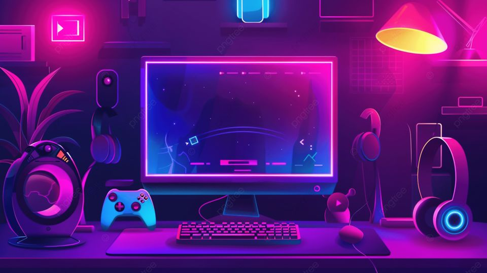
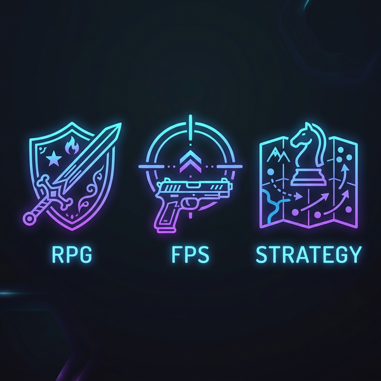
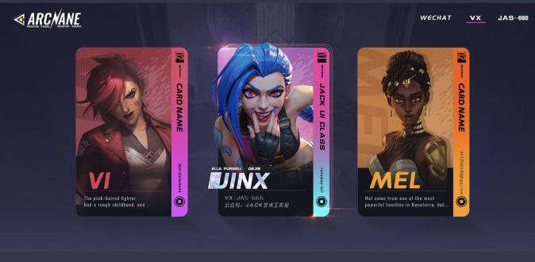

Світ Комп'ютерних Ігор
Ласкаво просимо до GameWorld — вашого путівника у захоплюючий всесвіт відеоігор. Дізнайтеся про найкращі ігри, їх історію та майбутнє ігрової індустрії.
Дізнатися більше Каталог ігор
Про нас
GameWorld — це ресурс для всіх, хто захоплюється комп'ютерними іграми. Ми збираємо найактуальнішу інформацію зі світу гейм-індустрії.
Комп'ютерні ігри стали одним із найпопулярніших видів розваг у сучасному світі. Від простих аркадних ігор 1970-х років до складних MMORPG та реалістичних симуляцій — ігрова індустрія пройшла довгий шлях.
На нашому сайті ви знайдете: огляди найкращих ігор (перейдіть на сторінку ігор), історію розвитку відеоігор з 1970-х років, та зможете зв'язатися з нами. Дізнайтеся більше на Вікіпедії.
Жанри ігор

Існує безліч жанрів комп'ютерних ігор, кожен з яких пропонує унікальний досвід. RPG дозволяють гравцям занурюватися у фантастичні світи та розвивати своїх персонажів.
FPS (шутери від першої особи) пропонують динамічний геймплей та змагання з іншими гравцями. Стратегії вимагають логічного мислення та планування. Перегляньте наш каталог RPG ігор для деталей.
Популярні платформи
Ігрові платформи
- PC (Windows, Linux, macOS) — найбільша бібліотека ігор на Steam
- PlayStation 5
- Xbox Series X|S
- Nintendo Switch
Мобільні платформи:
- Android
- iOS
VR-платформи:
- Meta Quest 3
- PlayStation VR2
- Valve Index
Топ жанрів
- RPG (Рольові ігри)
- FPS (Шутери)
- Стратегії
- Спортивні
- Пригодницькі
За популярністю серед молоді:
- Fortnite
- Minecraft
- Roblox
Класичні серії:
- The Legend of Zelda
- Final Fantasy
- Super Mario
Глосарій геймера
- FPS (Frames Per Second)
- Кількість кадрів на секунду — показник плавності гри.
- MMORPG
- Масова багатокористувацька онлайн рольова гра.
- E-sport
- Кіберспорт — змагання між гравцями на професійному рівні.
- Mod
- Модифікація гри, створена спільнотою для додавання нового контенту.
Порівняння ігор — Таблиця 3×4
| The Witcher 3 | Cyberpunk 2077 | Minecraft |
|---|---|---|
 |
||
| Офіційний сайт | Офіційний сайт | Офіційний сайт |
| RPG з відкритим світом. Один із найкращих сюжетів в іграх. | Action-RPG у футуристичному місті. Неперевершена атмосфера. | td>Sandbox гра. Будуй, досліджуй, вижиай. Безмежні можливості!
Ігрова статистика
| Категорія | Платформа | Загальна оцінка | |
|---|---|---|---|
| PC | Console | ||
| RPG | 95/100 | 92/100 | Відмінно |
| 120+ годин | 100+ годин | ||
| FPS | Кросплатформенна гра — 88/100 | Добре | |
| Стратегії | 91/100 | Не доступно | Чудово |
Вікіпедія — Відеоігри
Нижче ви можете переглянути статтю з Вікіпедії прямо на нашому сайті: